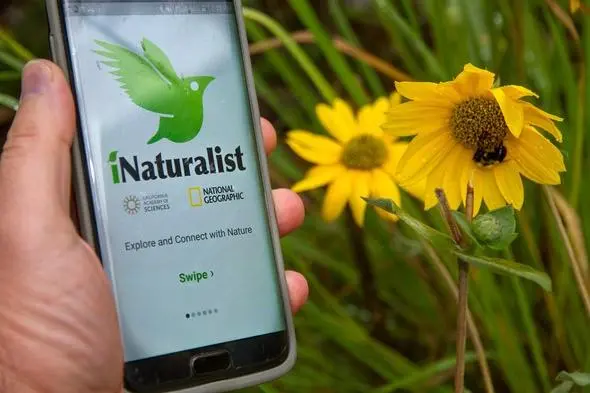
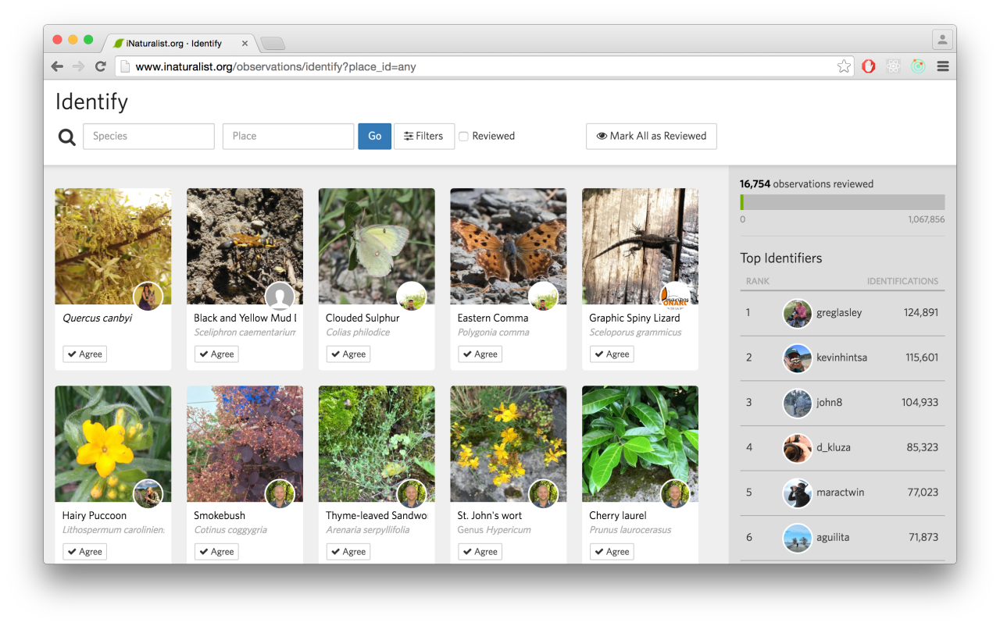

iNaturalist is a mobile application designed to engage users in the exploration and documentation of biodiversity. With iNaturalist, users can upload photos of plants, animals, and other organisms they encounter in their environment. These observations are then shared with a community of scientists, naturalists, and fellow enthusiasts who help identify and verify species. The app serves as a powerful tool for biodiversity research, citizen science, and environmental education, fostering a greater understanding and appreciation of the natural world. Whether you're a seasoned biologist or simply curious about the living things around you, iNaturalist offers an accessible platform to contribute to scientific knowledge and conservation efforts.
It provide features such as:
1.Biodiversity Documentation: iNaturalist allows users to document and identify plants and animals they encounter in their surroundings, contributing to global biodiversity research.
2.Photo Uploads: Users can upload photos of wildlife, including plants, insects, birds, and other organisms, along with location data, to create a comprehensive database of species distribution.
3.Community Engagement: The app fosters a vibrant community of nature enthusiasts, scientists, and citizen scientists who collaborate to identify and verify observations, enhancing data accuracy.
4.Educational Resource: iNaturalist serves as an educational tool, offering species identification assistance and educational materials to promote understanding of local ecosystems and biodiversity.
5.Scientific Research: Data collected through iNaturalist supports scientific research and conservation efforts by providing valuable insights into species distribution, behavior, and habitat preferences.
6.Citizen Science: By engaging users in citizen science projects, iNaturalist empowers individuals to contribute meaningfully to environmental conservation and management efforts worldwide.
 